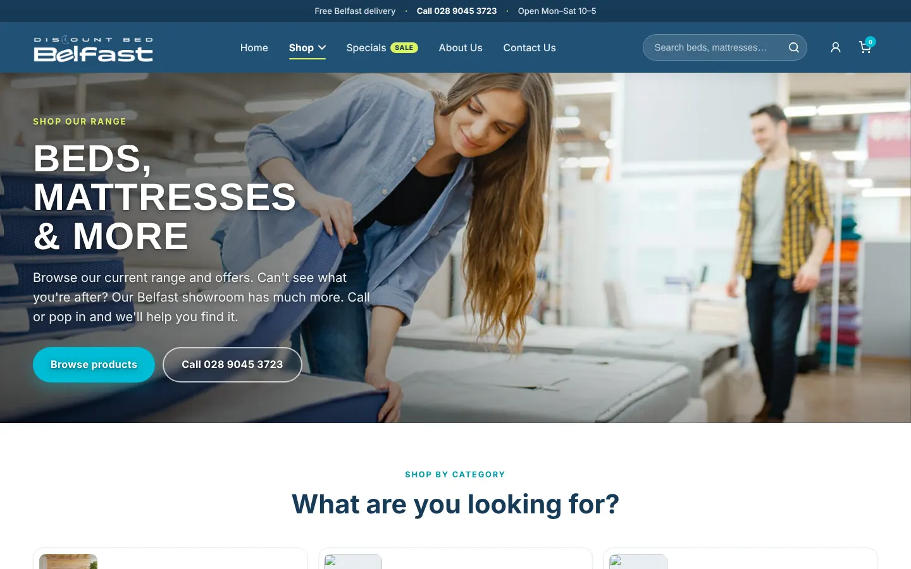
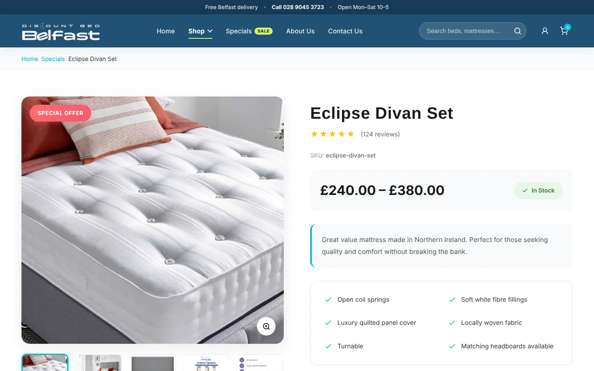
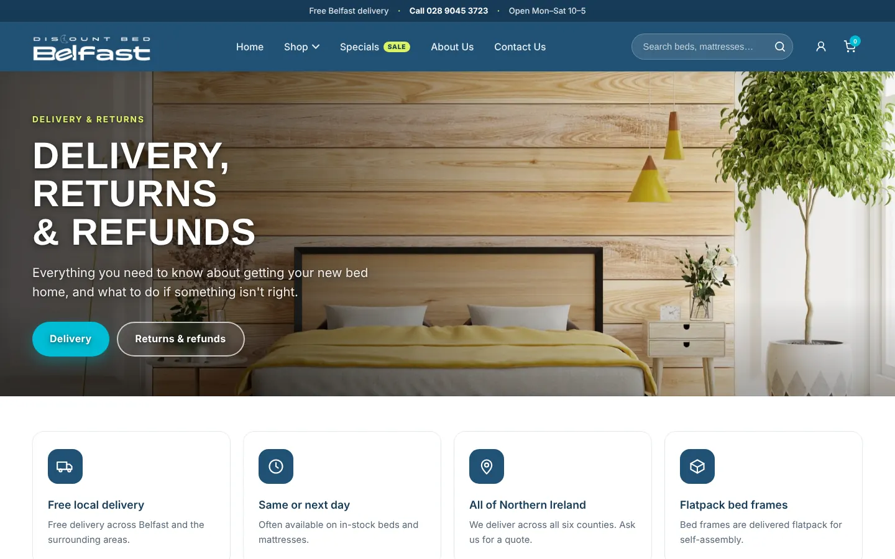
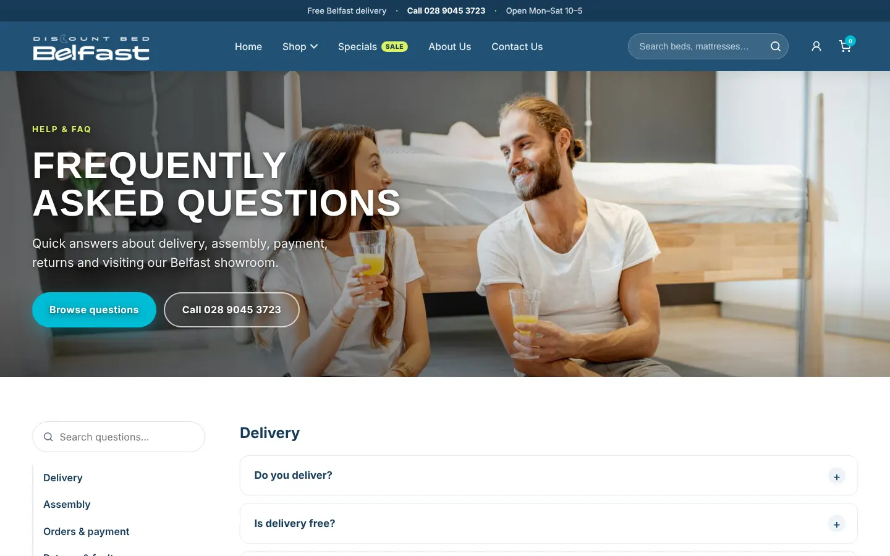
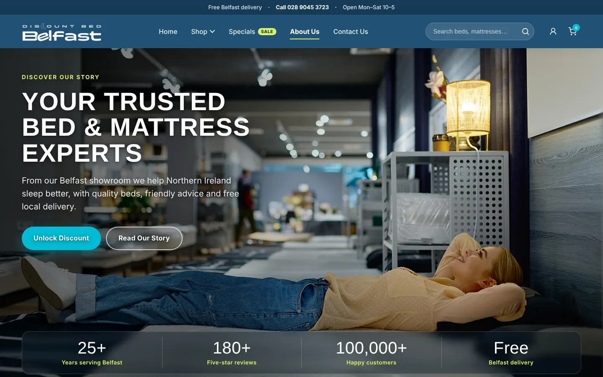
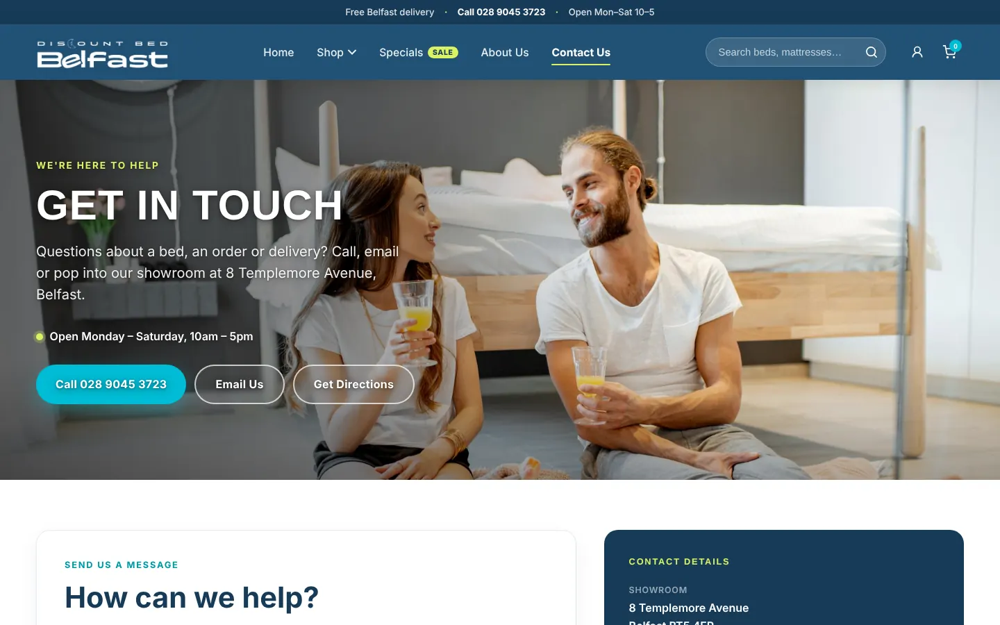
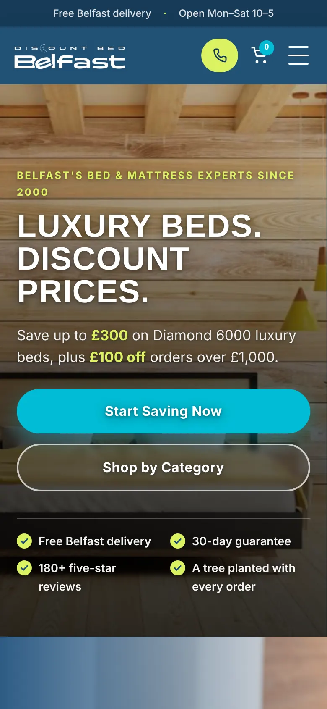
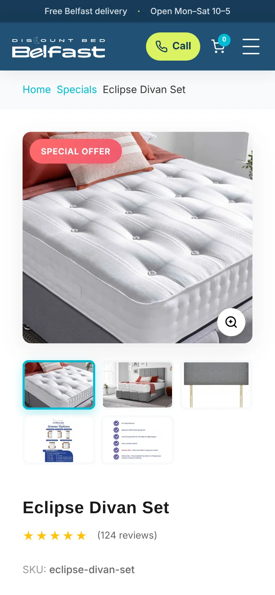
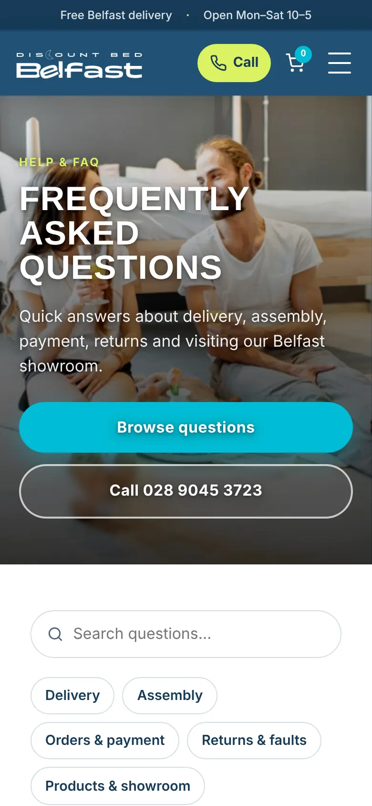
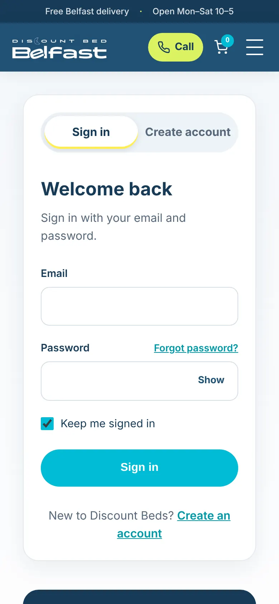

Discount Beds Belfast
Turning a local bed shop's dated website into a modern, mobile-friendly store that answers shoppers' questions before they have to ask.

Discount Beds Belfast is a local bed and mattress shop in Belfast, Northern Ireland. Its website looked dated, was hard to navigate, and broke down on phones, which made a trustworthy local business look less trustworthy online.
I first redesigned it as a ten-week project in Advanced Web Design at Valencia College, taking it from research to a five-page coded prototype. In 2026 I came back to it and rebuilt it as a complete nine-page site, using everything I had learned since.
Problem Statement
Outdated Visual Design
The website looked unprofessional, which eroded trust and raised doubts about the business.
Poor Usability
Confusing navigation made products hard to find, and on phones the text was cramped and some elements did not respond.
Missing Key Information
Product pages lacked basics like sizes, materials and reviews, so shoppers were left guessing.
Lack of Trust Signals
Reviews, delivery details and the returns policy were hard to find or missing, which held people back from buying.
Why it mattered
A bed is a big purchase. When a site feels unreliable and hides the details, shoppers leave and buy from a competitor they trust more.
Research & Insights
I worked through the existing site as a shopper would, from the home page to a product and on to checkout, and listed seven pain points around navigation, missing product details and trust.
Users & Audience

The Value-Driven Homeowner
Age 30–50. Looks for affordable furniture and is good at hunting for deals online. Needs clear specs, delivery details and financing options.
The Busy Renter or Family
Age 25–40. Needs a durable mattress quickly. Values convenience, shopping on a phone, fast checkout and reliable delivery.
The Budget-Conscious Student
Age 18–25. Shopping for a first "adult" bed. Price-sensitive, drawn to sales, and trusts reviews from other buyers.
User Goals
Find products quickly, compare prices and specs easily, understand the full cost, and feel confident about buying.
Pain Points
Too many choices, wary of unreliable sites, and unable to find key details like dimensions or warranties.
The Class Prototype
Ten weeks in Advanced Web Design at Valencia College, focused on five essential pages: Home, Shop, Product Detail, About and Contact.
Discovery
Reviewed the client brief, listed seven user pain points, and did a visual audit of three competitors to see what shoppers expect.
Information Architecture & Wireframing
Created a new sitemap to organize the content, then sketched low-fidelity wireframes in Whimsical, exploring three layouts for the home and product pages.

Visual Design & Branding
Made a mood board for a fresh visual direction, which led to high-fidelity Figma mockups with a calm color scheme and modern typography.

Prototyping
Turned the mockups into a clickable Figma prototype to test the main user flows and gather feedback.


Development
Hand-coded the prototype in HTML, CSS and JavaScript. It simulated shopping but had no live checkout.

Where it landed
A five-page responsive prototype that addressed the seven pain points. It proved the direction, but it was still a class prototype: some pages were thin, and shoppers still had questions it didn't answer.
View the 2025 prototypeThe Revamp
A year later I came back to the project with fresh eyes. I kept what worked, rebuilt the rest, and grew the site from five pages to nine.
- –5 pages
- –Simple top navigation
- –Product page with basic details
- –No delivery, returns or FAQ pages
- –Images loaded from other websites
- +9 pages, including Specials, Delivery, FAQ and Account
- +Shop menu with photo categories
- +Product page with gallery, sizes, specs and reviews
- +Delivery, returns and FAQ answered up front
- +Compressed images stored with the site
What I changed, and why
Trust, from the very first screen
A slim bar at the top shows free Belfast delivery, the phone number and opening hours on every page. The home page leads with the current offer and a row of trust points: free delivery, a 30-day guarantee, five-star reviews, and a tree planted with every order.
Finding a bed without hunting
The Shop menu opens into photo tiles for each category, and the shop page adds category cards and quick filters, so people can jump straight to divans, mattresses or sofa beds.

A product page that answers questions
The missing details from the original site now have a home: a photo gallery with zoom, a clear price range, size options, a checklist of features, and customer reviews.

Answers before people have to call
New Delivery & Returns and FAQ pages cover the questions that stop a purchase: delivery areas and times, assembly, payment and faulty items. The FAQ is searchable and grouped by topic.


A real story behind the shop
The About page introduces the showroom and the people who run it, and the Contact page brings together the phone number, email, directions and a message form.


Designed for the phone in your hand
On phones the header keeps a one-tap call button and the cart in reach, buttons stretch to full width, and long lists turn into easy-to-scan stacks.




Polish under the hood
Photos are compressed and stored with the site, with smaller versions for smaller screens. A gentle parallax effect adds depth to the page headers and photos, and switches itself off for visitors who have asked their device to reduce motion. Menus are announced to screen readers when they open and close.
Outcome & Takeaways
Where it is now
A complete nine-page responsive website, live on GitHub Pages, that fixes the seven original pain points and adds the delivery, returns and FAQ content shoppers need to buy with confidence.
Start from the problem
Working from a clear list of pain points made every design decision easier to make and easier to explain. A good-looking site that doesn't solve them is still a weak site.
Trust is designed, too
Delivery details, a visible phone number, reviews and a clear returns policy did as much for this shop as the new colors and type. Content is part of the design.
Revisiting old work pays off
Coming back a year later showed me what my first version missed. Rebuilding it taught me more than starting something new would have.
Performance and motion are design choices
Compressing images and respecting reduced-motion settings are small details that decide whether a site feels fast and comfortable for everyone.
Next steps
- →Test the new pages with real shoppers
- →Add analytics to see where people drop off
- →Connect a real cart and checkout
Explore more work
View Full Portfolio →